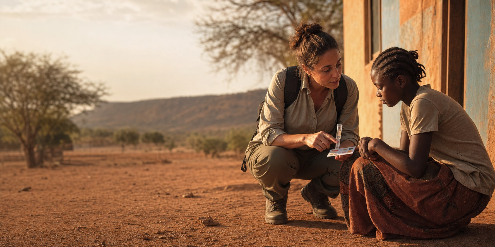
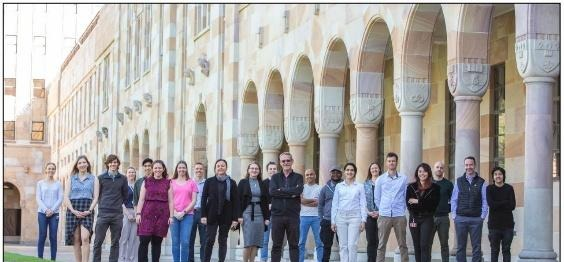

DiseaseChaser · Global health advisory & consultancy
The outbreak is never only a virus.
DiseaseChaser is the independent advisory practice built on a grass-roots view of disease prevention: that an epidemic response is decided long before a crisis makes headlines — in surveillance quality, exposure-screening capability, vaccine candidates and who holds the samples. That view was formed in the field, in an epidemiological study of Buruli ulcer cases across Victoria, Australia, and the development of one of the first pilot serological screening tests for community exposure to the disease, later carried into a systematic review and meta-analysis of the wider diagnostic evidence base. DiseaseChaser applies that same discipline — go to where the evidence is being made, test what actually works, then build the standard — for governments, funders and multilateral agencies working the unglamorous machinery of outbreak response: surveillance, vaccine development standards, biospecimen access, and who owns the samples.
Field sampling, dawn. The sample is the beginning of every answer — and the point where most outbreak responses quietly fail.

Illustrative — the fight against neglected tropical diseases is won or lost at this scale: one explanation, one household, at a time.
15+Years in infectious disease
30+Publications
4Continents worked
6Areas of expertise
About DiseaseChaser
An advisory practice for the moment before an outbreak becomes a crisis.
DiseaseChaser began as a phrase Dr Michael Selorm Avumegah coined for himself — a personal commitment to keep showing up and fighting neglected tropical diseases. It has since grown into a recognised name. It started long before the branding: in community-based outreach on neglected tropical diseases in Ghana, in Buruli ulcer wards across rural Ghana and Victoria, Australia, and in the conviction that these diseases stay neglected largely because the people carrying them are too. That same instinct for turning up where a pathogen was doing the most damage later carried him into mpox cohorts in Uganda, Nipah survivor communities in Bangladesh, and a molecular clamp vaccine platform racing to answer COVID-19. What began as one person's refusal to look away has become something more deliberate: a professional commitment to preventing disease among the most at-risk populations through appropriate and effective means, wherever geography, funding or politics would otherwise leave them exposed.
We work with ministries of health, multilateral agencies, funders and implementing partners on the technical and governance layer that decides whether a pandemic response actually functions — surveillance quality, vaccine development standards, biospecimen custody, and who holds the leverage when a sample crosses a border. Engagements range from a half-day briefing to a retained seat on a scientific advisory board, but the standard is constant: judgement independent enough to say the uncomfortable thing, and technical enough that a ministry, funder or agency can act on it.
The sections below set out how — our advisory practice, our field record, and the evidence behind it.
VISION
A world where geography no longer decides who survives an outbreak.
We work toward a global health system in which the speed and quality of an epidemic response depend on preparation and governance — not on the wealth, geography or negotiating power of the country where a pathogen first appears.
MISSION
Turn technical rigour into leverage for the countries carrying the burden.
Our mission is to make the unglamorous machinery of outbreak response — standards, samples, assays, surveillance — work in favour of the communities most exposed to disease, and to help the health systems carrying that burden fund and govern their own capability rather than remain dependent on it.
PRINCIPLES
How we work
Capability is built, not declared
Prevention is the foundation, not an afterthought
Equity by design, not by afterthought
Trust and coordination beat leverage and bravado
Independence is non-negotiable
Advisory practice
Where I am useful to a ministry, a funder or an agency.
Field epidemiology and readiness review grounded in casework, not paper plans — from case ascertainment and exposure screening in a neglected tropical disease to national surveillance design for priority pathogens.
Field and surveillance epidemiology, from case-finding to exposure screening
Surveillance and One Health system design
Diagnostic pathway and rapid-test strategy
100 Days Mission readiness assessment
02
Vaccine R&D advisory
Independent technical review from discovery through early-phase clinical development.
Preclinical model selection and regulatory fit
Immunogenicity assays and correlates of protection
International standards and reference materials
03
Biospecimen & data stewardship
Building sample-sharing arrangements that survive both an outbreak and an ethics committee.
Biobank and repository governance
Material transfer, benefit-sharing, sovereignty
Rapid deployability during an emergency
04
Equity-by-design programme review
Testing whether an R&D or grant portfolio genuinely shifts capability to LMIC institutions.
LMIC research capacity strengthening
Survivor- and community-centred study design
Authorship, data and IP arrangements
05
Science communication & capacity building
Translating technical evidence for ministers, boards and communities — and training the people who will do it next.
Policy briefs and expert testimony
Scientific workforce mentorship programmes
Facilitation for multi-country consortia
How we work together
Three ways to start, depending on how far along the decision is.
01
Briefing
Half a day
One question, answered honestly. Suited to a single decision point — a go/no-go call, a board question, a second opinion before a commitment is made.
Verbal or short written brief
No standing engagement required
02
Review
Four to eight weeks
A scoped piece of work with written findings — a programme review, a technical audit, or a strategy assessment ahead of a funding decision.
Structured findings document
Scope and deliverable fixed at the outset
03
Standing advisor
Retained, ongoing
A seat on a scientific advisory board or consortium, for organisations that need continuity of judgement across a programme's life — not a one-off view.
Agreed cadence of engagement
Renewable term
Every engagement starts with a short, no-cost scoping call to confirm fit before anything is agreed. Get in touch to start that conversation.
Areas of expertise
Six domains, drawn from a 30+ paper publication record.
Grouped by research theme, leadership activity and scientific contribution across the publication record — not by any single pathogen. Select a domain to see the areas it covers and the publications behind it.
Global biospecimen acquisition and governanceSpecimen-sharing frameworksOutbreak sample collection strategiesBiobanking for epidemic preparednessSurvivor cohort sample access
One of the strongest specialisations in the record: enabling equitable access to clinical specimens, establishing specimen-sharing frameworks, and strengthening outbreak preparedness through strategic biospecimen networks.
Multiple CEPI-led outbreak-preparedness initiatives involving sample access and specimen sharing.
WHO International StandardsAntibody reference materialsBiological standardisationVaccine assay harmonisationRegulatory science
Recognised expertise in coordinating international collaborative studies and developing biological reference materials used to standardise vaccine and diagnostic measurements globally.
Further 2026 mpox studies from Uganda on viral burden, HIV-associated vulnerability, clinical severity markers, diagnostic strategies and microbiological characterisation.
SARS-CoV-2 drives NLRP3 inflammasome activation in human microglia, 2022–2023.
Global health policyNeglected tropical diseasesCommunity engagementSurvivor studiesHealth equity
Combines biomedical research with a strong focus on patient outcomes, survivor experiences, health equity and neglected diseases affecting vulnerable populations.
Mycobacterium ulcerans disease and host immune responses — New Advances in Neglected Tropical Diseases, 2022.
Samples travel north faster than capability travels south.
The default architecture of outbreak research still moves biological material and data out of affected countries and returns publications, not capacity. Equity-by-design means writing the counter-defaults into the protocol at the start: who runs the assay, who is named on the paper, who holds the reference material, and what the community gets when the emergency ends.
It is not a values statement. It is a preparedness argument. The next epidemic will be detected by a laboratory that either has the standards, the reagents and the trained staff — or does not.
Selected evidence
30+ peer-reviewed papers. Seven that best show the range.
Available for keynotes, expert panels, technical rounds and media commentary.
I speak in plain language without thinning the science, and I am comfortable in front of ministries, scientific audiences and community groups on the same day.
Illustrative — plain language, on the record, in front of the audience that needs to hear it.
May 2026
Overview of the Nipah virus vaccine strategy
Public Health Ontario Microbiology Rounds — epidemiology, diagnostics, animal models and correlates of protection for a high-fatality zoonotic pathogen with no licensed vaccine.
Webinar
Introduction to biospecimen sourcing for pandemic preparedness
Biobanking for Pandemic Preparedness, hosted by the Global Health Council with PATH — building trust, social acceptance and rapid deployability in pandemic biobanking.
Webinar
Availability and use of standards in vaccine development
Vaccinology webinar walking through the international reference standards behind comparable vaccine trial results across laboratories.
Webinar
Let's talk about COVID-19 and vaccines
OMSU '04 webinar for the Ghanaian alumni community, hosted over Zoom, covering the state of COVID-19 vaccine development from inside a UQ trial team.
Talks I give
Why the 100 Days Mission lives or dies in the laboratoryWho owns the sample?Standards as invisible infrastructureNeglected tropical diseases in a pandemic-funded worldWhat Nipah survivors know that our protocols do notBuilding a scientific workforce across AfricaBuilding Wakanda Valley: Africa's path to scientific and technological sovereigntyWhy colonial history cannot be the whole explanationGlobal health's comedy of errors, and its real human cost
Upcoming events
Where to see me next.
Confirmed talks, panels and convenings, with a live countdown. Dates are managed in one place and this list updates itself as events pass.
No events currently scheduled — check back soon, or see the speaking archive above.
About me
Founder & CEO, DiseaseChaser.
MSAPhoto pending — headshot to follow
Dr Michael Selorm Avumegah is a global health strategist, vaccinologist and the Founder and CEO of DiseaseChaser, a practice dedicated to advancing scientific sovereignty, outbreak preparedness and equitable health innovation across Africa and the Global South.
His scientific grounding began in Ghana, where he led community-based public health outreach on sexually transmitted and neglected tropical diseases while completing a biology degree at KNUST in Kumasi — an experience that continues to inform his conviction that lasting health security must be built from the ground up, not imposed from the outside. A scholarship took him to Aarhus University in Denmark, then to Deakin University in Australia for doctoral research on Buruli ulcer, a disease still dismissed as witchcraft in parts of Ghana: an epidemiological update of cases in Victoria and a pilot serological screening test for community exposure, later formalised into a systematic review and meta-analysis of the field's diagnostic evidence.
At the University of Queensland, his preclinical work on the molecular clamp vaccine platform contributed to a SARS-CoV-2 candidate that advanced to a phase 1 clinical trial and underpinned a technology later spun out as Vicebio, acquired by Sanofi in 2025 in a deal worth up to US$1.6 billion. He has since carried that same instinct for tracking outbreaks to their source into technical work on vaccine reference standards and biospecimen access for organisations including the Coalition for Epidemic Preparedness Innovations, across pathogens from Nipah virus to mpox and Marburg.

The Molecular Clamp Vaccines Team, The University of Queensland. L–R: Summa Bibby, Eve Radunz, David Edwards, Martina Jones, Justin Goh, Marianne Gillard, Julia Lackenby, Ben Hughes, Kym Hoger, Christina Henderson, Christopher McMillan, Paul Young, Danushka Wijesundara, Selorm Avumegah, Ari Golbaz Hagh, Karen Hughes, Keith Chappell, Stacey Cheung, Daniel Watterson, Trent Munro, Naphak Modhiran.
It is this record — laboratory and field, Ghana to Denmark to Australia to the UK — that gave rise to DiseaseChaser. Selorm founded the practice to challenge the systems and assumptions that leave low- and middle-income countries perpetually reactive to health emergencies rather than structurally prepared for them, and to put hard-won technical expertise to independent use for the ministries, funders and communities carrying that burden. He is also a committed mentor to early-career scientists across Africa, Europe and Australia through MeetMentors.
Independence & conflicts of interest
DiseaseChaser is operated by Dr Avumegah in a personal capacity, independently of his employment at the Coalition for Epidemic Preparedness Innovations (CEPI). It draws on no CEPI confidential information, data or resources, is not undertaken on behalf of CEPI, and is not endorsed by CEPI or any other current or former employer. Institutional roles listed on this site, including at CEPI, are provided for professional background only.
Track record
Kumasi to Aarhus to Geelong to Oslo to London.
Six roles, one throughline: laboratory and field experience carried across four continents into standards, platforms and programmes that shape how the world prepares for outbreaks.
4+ yrs · current
Programme Leader & Scientist
CEPI — Coalition for Epidemic Preparedness Innovations, Oslo & London
Programme lead for the Biospecimen Sourcing Initiative; subject-matter expert in early-stage vaccine development; leads projects developing WHO International Antibody Standards for priority pathogens.
9+ yrs · ongoing
Research Advisor, previously Programs Advisor & Mentor
MeetMentors
Design and advisory for youth mentorship and scientific training programmes across Africa, Europe and Australia, building the next generation of research capability.
3 yrs
Postdoctoral Research Fellow, previously Research Scientist
The University of Queensland, Australia
School of Chemistry and Molecular Biosciences. Molecular clamp vaccine platform: rapid-response subunit design, preclinical development and phase 1 evaluation for SARS-CoV-2.
4 yrs
PhD, Medical Microbiology & Infectious Diseases
Deakin University, Australia
Epidemiology of Buruli ulcer and a potential screening test for Mycobacterium ulcerans exposure.
2 yrs
MSc, Biology — Medical Microbiology & Bacteriology
Aarhus University, Denmark
5 yrs
BSc Biological Science; Teaching & Research Assistant; STI Peer Educator
Kwame Nkrumah University of Science and Technology, Kumasi, Ghana
Early laboratory placements at the Noguchi Memorial Institute for Medical Research and the Ghana Food and Drugs Board, Takoradi.
Selected awards & recognition
External recognition for the same work described above.
2022
Certificate of Recognition, Vaccine Development
Queensland African Communities Council
2021
Award for Contribution to COVID-19 Vaccine
Ghana High Commission, Australia
2020
Excellence in Innovation Award
The University of Queensland — awarded to the Molecular Clamp Vaccines Team
Current projects
What I'm working on right now.
A live snapshot of active advisory and research work, updated as engagements open and close.
Quote of the day
Loading…
Recommendations
Worked with me? I'd welcome a few words for the record.
“Dr Selorm Avumegah, a Ghanaian-Australian and key team member at The University of Queensland in Australia, is working tirelessly on a vaccine for COVID-19… Now he's working in Brisbane to save human lives and find a solution to the COVID pandemic.”
If we've worked together — on an advisory review, a research collaboration, a mentoring relationship or a speaking engagement — I'd welcome a short recommendation for this page. Send it by email using the link below, with your name and how we worked together.
Every submission is read and reviewed by me personally, and nothing is published on this page without my explicit approval.
Enquiries
Bring me in before the plan is finished.
Short advisory reviews, standing technical advisory roles, speaking engagements and media commentary. Ministries of health, multilateral agencies, funders and implementing partners.
Advisory work in this field regularly touches sensitive health, sample and programme data. All engagements can be covered by an NDA or data-handling agreement on request, and no client information, samples or findings are shared, published or reused without written consent.